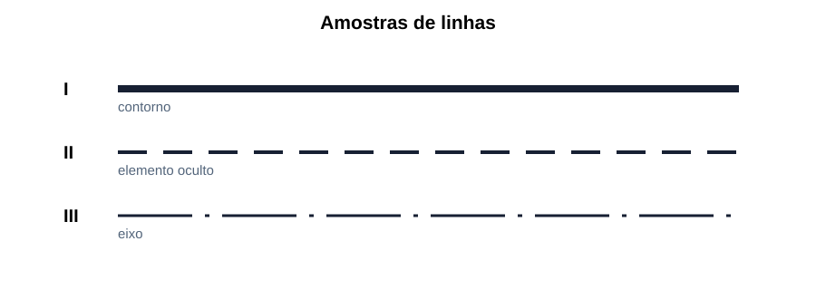
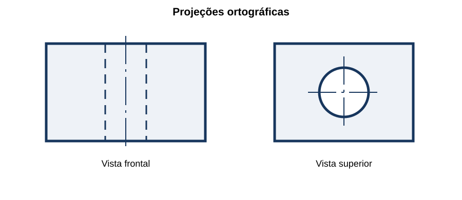
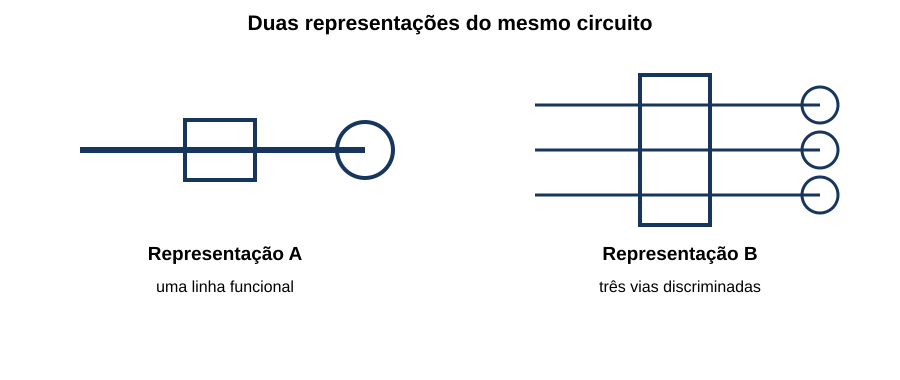
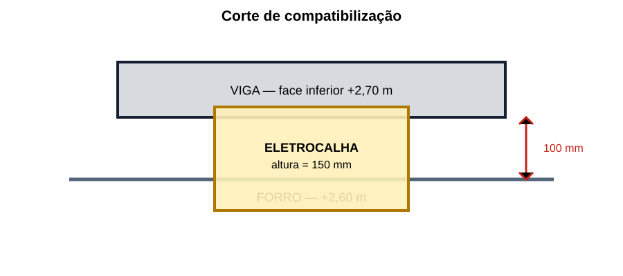

Desenho Técnico & Interpretação de Projetos
15 questões autorais calibradas pelo padrão IDECAN • Bloco Bronze
| Questão 01 | Escalas • Conversão e Conferência |
Em uma planta na escala 1:75, o trecho entre o quadro QD-1 e uma caixa mede 64 mm no desenho. Para orçamento, acrescentam-se 12% ao comprimento real para subidas e folgas. O comprimento de eletroduto a considerar é:
A) 4,30 m.
B) 4,80 m.
C) 5,38 m.
D) 5,76 m.
Gabarito Comentado: Alternativa C
A medida real é $64\times75=4\,800\,mm=4{,}80\,m$. Com o acréscimo, $L=4{,}80\times1{,}12=5{,}376\,m$, aproximadamente $5{,}38\,m$.
Análise das armadilhas:Usar 64/75, esquecer a conversão de milímetros para metros ou aplicar 12% à medida desenhada sem completar a escala.Como pensar nesta questão:Converta desenho em dimensão real, uniformize as unidades e somente depois aplique perdas ou folgas.
| Questão 02 | ABNT NBR 16861 • Tipos de Linha |
No detalhe esquemático, os elementos I, II e III representam, respectivamente, contorno visível, aresta não visível e eixo de simetria.

A associação coerente é:A) I tracejada larga; II contínua estreita; III contínua larga.
B) I contínua larga; II tracejada; III traço longo e ponto estreita.
C) I traço longo e ponto; II contínua larga; III tracejada estreita.
D) I contínua estreita; II traço longo e ponto; III tracejada larga.
Gabarito Comentado: Alternativa B
Contornos e arestas visíveis recebem linha contínua destacada; elementos não visíveis são indicados por linha tracejada; eixos e simetrias usam linha de cadeia, usualmente traço longo e ponto estreita.
Análise das armadilhas:Inverter linha oculta e linha de centro ou escolher apenas pela espessura sem observar o padrão dos segmentos.Como pensar nesta questão:Leia primeiro a continuidade: contínua, tracejada ou cadeia. Depois verifique espessura e função.
| Questão 03 | Vistas Ortográficas • Coerência Espacial |
A peça representada possui um furo cilíndrico vertical passante. A vista superior mostra o círculo do furo e a frontal mostra duas arestas ocultas.

Essa representação indica que:A) o eixo do furo é perpendicular ao plano da vista superior e o vazio projeta-se oculto na vista frontal.
B) o eixo do furo é paralelo ao plano da vista superior e aparece como duas linhas visíveis nessa vista.
C) o furo é horizontal, porque todo círculo em uma vista corresponde a um eixo paralelo ao observador.
D) as linhas ocultas frontais representam necessariamente um rasgo aberto nas duas faces laterais.
Gabarito Comentado: Alternativa A
Quando se observa na direção do eixo de um furo cilíndrico, sua abertura aparece circular. Na vista perpendicular ao eixo, as geratrizes internas ficam atrás do material e são representadas como arestas ocultas.
Análise das armadilhas:Decidir a orientação usando somente uma vista ou interpretar toda linha tracejada como rasgo aberto.Como pensar nesta questão:Reconstrua o volume combinando ao menos duas vistas e acompanhe o mesmo elemento entre elas.
| Questão 04 | Cortes e Seções • Hachuras |
Em um corte total de conjunto, um eixo maciço longitudinalmente interceptado pelo plano de corte foi desenhado sem hachura, enquanto a carcaça cortada foi hachurada. A leitura tecnicamente adequada é:
A) todo componente tocado pelo plano deve ser hachurado, inclusive eixos em corte longitudinal, sem exceção convencional.
B) a ausência de hachura prova que o eixo está atrás do plano e não pertence ao conjunto mostrado.
C) hachuras representam materiais transparentes, enquanto áreas sem hachura representam materiais metálicos.
D) há convenções que omitem hachura em elementos longitudinais como eixos, preservando-a nas partes efetivamente seccionadas da carcaça.
Gabarito Comentado: Alternativa D
Em cortes longitudinais de conjuntos, certos elementos normalizados ou alongados — como eixos, parafusos e nervuras em situações próprias — podem ser mostrados sem hachura para evitar interpretação enganosa. A carcaça atravessada permanece hachurada.
Análise das armadilhas:Aplicar hachura mecanicamente a tudo ou interpretar ausência de hachura como ausência física do componente.Como pensar nesta questão:Identifique a direção do corte, o tipo do elemento e a convenção aplicável antes de concluir que houve erro.
| Questão 05 | Cotagem • Acúmulo de Tolerâncias |
Três furos devem ser posicionados a 100,0 mm, 200,0 mm e 300,0 mm de uma mesma borda funcional, cada posição com tolerância de ±0,2 mm. Para reduzir acúmulo de erros na fabricação e inspeção, convém:
A) usar cotagem por uma referência comum, indicando as três posições em relação à mesma origem.
B) omitir tolerâncias e usar a escala gráfica como critério dimensional de aceitação.
C) cotar cada furo a partir do anterior, mantendo três trechos consecutivos de 100,0 mm.
D) substituir as posições por uma cota total de 300,0 mm, deixando os furos intermediários livres.
Gabarito Comentado: Alternativa A
Na cotagem em cadeia, o erro de uma etapa pode afetar as posições seguintes. Cotas tomadas de uma referência comum controlam diretamente cada posição funcional e reduzem o acúmulo entre furos.
Análise das armadilhas:Confundir repetição de módulos iguais com controle independente de posição ou aceitar a escala como substituta das cotas.Como pensar nesta questão:Descubra qual superfície funciona como origem de montagem e cote os elementos críticos diretamente a partir dela.
| Questão 06 | Diagramas Elétricos • Unifilar e Multifilar |
A figura apresenta duas representações do mesmo circuito trifásico.

Sobre a finalidade dos desenhos, assinale a correta:A) o unifilar explicita cada condutor e borne, enquanto o multifilar reduz todas as fases a uma única linha.
B) o multifilar só pode representar corrente contínua, e o unifilar é exclusivo de redes trifásicas.
C) o unifilar sintetiza conexões e equipamentos; o multifilar discrimina condutores ou polos para detalhar a ligação.
D) as duas formas contêm sempre o mesmo nível de detalhe e diferem apenas pela orientação da folha.
Gabarito Comentado: Alternativa C
O diagrama unifilar condensa um sistema de vários condutores em uma linha funcional, útil para topologia e proteção. O multifilar mostra separadamente vias, polos ou condutores, favorecendo a execução e a conferência das conexões.
Análise das armadilhas:Inverter as definições ou associar cada representação a um único tipo de corrente.Como pensar nesta questão:Conte quantas vias elétricas aparecem e pergunte se o objetivo é compreender a topologia ou executar a fiação.
| Questão 07 | Simbologia e Legenda • Consistência Documental |
Na planta elétrica, um símbolo circular identificado como “T2” aparece em vários ambientes. A legenda da própria prancha define T2 como tomada de uso específico a 1,30 m, mas uma prancha antiga o descreve como ponto de telefone. Antes da execução, deve-se:
A) adotar a interpretação mais comum do símbolo, ignorando identificadores e revisões.
B) verificar revisão e hierarquia documental e formalizar a divergência se os documentos válidos ainda forem incompatíveis.
C) usar a prancha antiga porque documentos anteriores têm prioridade cronológica sobre revisões novas.
D) executar metade dos pontos de cada tipo até que a fiscalização escolha a solução final.
Gabarito Comentado: Alternativa B
Símbolo isolado não basta: identificador, legenda, notas, revisão e lista de documentos compõem a interpretação. Se houver incompatibilidade entre documentos vigentes, a solução deve ser esclarecida formalmente antes da execução.
Análise das armadilhas:Confiar apenas no repertório visual, presumir que o documento mais antigo prevalece ou improvisar uma solução física.Como pensar nesta questão:Leia o símbolo como um código: forma + identificador + legenda + revisão + documento de referência.
| Questão 08 | Referências Cruzadas • Quadro e Circuitos |
A planta indica que as tomadas da sala pertencem ao circuito C7 do QD-2. No diagrama unifilar, o C7 do QD-2 alimenta iluminação externa, e o quadro de cargas reserva as tomadas da sala ao C9. A interpretação segura é:
A) a numeração dos circuitos é apenas ilustrativa e pode ser redefinida livremente pela equipe de campo.
B) o circuito C7 deve alimentar simultaneamente ambas as cargas, pois a planta sempre prevalece.
C) o quadro de cargas pode ser ignorado, porque sua função se limita ao cálculo tarifário da edificação.
D) há conflito entre documentos que deve ser registrado e esclarecido antes do lançamento dos condutores.
Gabarito Comentado: Alternativa D
Planta, unifilar e quadro de cargas devem compartilhar identificação, proteção, condutores e cargas. A divergência afeta execução, seletividade, balanceamento e identificação; por isso requer esclarecimento formal, não escolha arbitrária.
Análise das armadilhas:Eleger automaticamente um documento como vencedor sem verificar regras contratuais ou tratar o código de circuito como elemento decorativo.Como pensar nesta questão:Faça rastreamento ponta a ponta: carga → circuito → quadro → proteção → alimentador, comparando todos os documentos.
| Questão 09 | Escala de Impressão • Cotas e Barra Gráfica |
Uma prancha originalmente em A1 e escala 1:50 foi impressa em A3 com ajuste automático. A cota escrita de uma parede permanece 4,20 m, mas a medição com régua resulta em 2,10 m quando aplicada diretamente a escala indicada. Para levantar a dimensão, deve-se:
A) adotar a cota de 4,20 m e verificar escala gráfica ou fator de impressão antes de medir elementos sem cota.
B) somar 2,10 m à cota escrita e adotar 6,30 m como correção da redução.
C) usar 2,10 m, porque a régua sempre prevalece sobre qualquer anotação de projeto.
D) considerar 8,40 m, pois toda impressão A1 para A3 duplica linearmente o objeto real.
Gabarito Comentado: Alternativa A
A redução alterou a escala física impressa, mas não o valor dimensional indicado. Cotas prevalecem sobre medição direta; para trechos sem cota, é necessário confirmar o fator de redução ou utilizar barra gráfica validada.
Análise das armadilhas:Tomar a escala nominal como invariável após redimensionamento ou corrigir a discrepância por soma em vez de fator linear.Como pensar nesta questão:Antes de usar régua, valide o formato, a escala gráfica e uma dimensão conhecida da cópia.
| Questão 10 | Planta Elétrica • Topologia e Comando |
Em uma planta, duas luminárias L1 e L2 estão ligadas ao mesmo circuito, porém cada uma possui linha de comando associada a um interruptor diferente. Essa representação permite concluir que:
A) as luminárias compartilham necessariamente o mesmo comando porque pertencem ao mesmo circuito terminal.
B) alimentação pelo mesmo circuito não impede comandos independentes, conforme as linhas de comando indicadas.
C) cada interruptor exige obrigatoriamente um quadro de distribuição exclusivo para sua luminária.
D) a linha de comando representa o trajeto físico exato do eletroduto e dispensa notas e detalhes executivos.
Gabarito Comentado: Alternativa B
Circuito de alimentação e agrupamento de comando são informações diferentes. Duas cargas podem compartilhar proteção e condutores de alimentação em parte do percurso, mas serem acionadas separadamente conforme o esquema funcional.
Análise das armadilhas:Confundir número do circuito com número do comando ou interpretar linha funcional como rota construtiva exata.Como pensar nesta questão:Separe três camadas: energia, comando e encaminhamento físico; confirme como cada uma é representada na legenda.
| Questão 11 | Compatibilização • Planta e Corte |
A planta prevê uma eletrocalha cruzando uma viga; o corte mostra a face inferior da viga a 2,70 m e o forro a 2,60 m, enquanto a eletrocalha possui 150 mm de altura.

Sem abertura estrutural aprovada, a conclusão é:A) o espaço vertical de 100 mm acomoda a eletrocalha de 150 mm, restando folga de 50 mm.
B) o conflito desaparece porque elementos elétricos podem atravessar vigas sem consulta ao projeto estrutural.
C) a planta define apenas posição horizontal; o corte revela interferência que exige revisão de rota ou cotas.
D) o forro deve ser executado primeiro e a eletrocalha pode ser deformada para ocupar o espaço remanescente.
Gabarito Comentado: Alternativa C
Entre viga e forro existem apenas $2{,}70-2{,}60=0{,}10\,m=100\,mm$, menos que os 150 mm da eletrocalha, sem contar suportes e folgas. A incompatibilidade só aparece ao combinar planta e corte.
Análise das armadilhas:Inverter a subtração, ignorar a terceira dimensão ou admitir interferência estrutural sem aprovação.Como pensar nesta questão:Use a planta para localizar o cruzamento e o corte para testar níveis, dimensões, suportes e manutenção.
| Questão 12 | Detalhes e Chamadas • Abrangência |
Uma chamada na planta indica “DET. 4/E-12” junto à passagem de cabos por parede corta-fogo. A leitura usual dessa referência é:
A) quatro cabos pertencentes ao circuito E-12, independentemente da legenda da prancha.
B) detalhe sem vínculo documental, inserido apenas para organizar graficamente a planta.
C) revisão 4 da prancha atual, que elimina a necessidade de consultar outra folha.
D) detalhe número 4 localizado na prancha E-12, que deve ser consultado para completar a solução.
Gabarito Comentado: Alternativa D
A chamada conduz do desenho geral a uma vista ou detalhe ampliado, normalmente pelo par número do detalhe/prancha de destino. Esse detalhe pode conter selagem, materiais, fixação e requisitos omitidos na escala da planta.
Análise das armadilhas:Ler a referência como quantidade de componentes, número de circuito ou revisão sem consultar a convenção documental.Como pensar nesta questão:Procure a chamada no índice de detalhes e siga o endereço até a prancha indicada antes de quantificar ou executar.
| Questão 13 | Níveis e Elevações • Cálculo Aplicado |
O piso acabado de uma sala está na cota +102,35 m. Um detalhe posiciona o centro de um quadro a 1,50 m acima do piso acabado. A elevação absoluta do centro do quadro é:
A) +103,85 m.
B) +102,50 m.
C) +103,50 m.
D) +100,85 m.
Gabarito Comentado: Alternativa A
A altura indicada é relativa ao piso acabado. Portanto, $102{,}35+1{,}50=103{,}85\,m$. Não se deve subtrair, pois o quadro está acima da referência local.
Análise das armadilhas:Usar a altura como elevação absoluta, trocar soma por subtração ou somar apenas os centímetros.Como pensar nesta questão:Identifique primeiro o datum absoluto e depois aplique a diferença de nível com o sinal coerente.
| Questão 14 | Revisões • Projeto Executivo e As Built |
Durante a obra, uma rota de eletroduto foi alterada por interferência e aprovada formalmente. No encerramento, a prancha executiva original foi arquivada sem registrar a mudança. O conjunto documental final está:
A) adequado, porque a aprovação verbal em campo substitui a atualização do desenho.
B) adequado, desde que a alteração reduza o comprimento total de eletroduto instalado.
C) incompleto, pois o as built deve registrar a configuração efetivamente executada e suas revisões aprovadas.
D) incompleto apenas se a rota modificada alterar o valor financeiro do contrato.
Gabarito Comentado: Alternativa C
O as built documenta a instalação efetiva e deve incorporar alterações aprovadas, permitindo operação, manutenção e futuras intervenções. A necessidade não depende apenas de custo, mas da rastreabilidade física e técnica.
Análise das armadilhas:Tratar aprovação de campo como atualização automática do acervo ou vincular documentação somente a impacto financeiro.Como pensar nesta questão:Compare desenho final e instalação ponto a ponto; toda divergência aprovada precisa aparecer na revisão entregue.
| Questão 15 | Controle Documental • Divergência de Projeto |
A equipe recebe por mensagem uma imagem recortada indicando novo posicionamento de um quadro, sem número da prancha, revisão, escala ou aprovação. O projeto vigente mostra outra posição. A conduta adequada é:
A) executar a imagem mais recente, pois a data da mensagem substitui identificação e aprovação documental.
B) registrar a dúvida, solicitar documento controlado ou resposta formal e executar somente após definir a referência válida.
C) combinar graficamente as duas posições e instalar o quadro no ponto médio entre elas.
D) ignorar definitivamente qualquer possibilidade de alteração, mesmo que seja emitida revisão aprovada.
Gabarito Comentado: Alternativa B
Uma imagem sem contexto não garante escopo, escala, autoria ou validade. O controle documental exige identificação inequívoca da referência e formalização da decisão, evitando retrabalho e perda de rastreabilidade.
Análise das armadilhas:Confundir novidade da mensagem com validade técnica, improvisar solução intermediária ou impedir alterações formalmente aprovadas.Como pensar nesta questão:Antes de executar, confirme cinco itens: documento, prancha, revisão, aprovação e compatibilidade com as demais disciplinas.